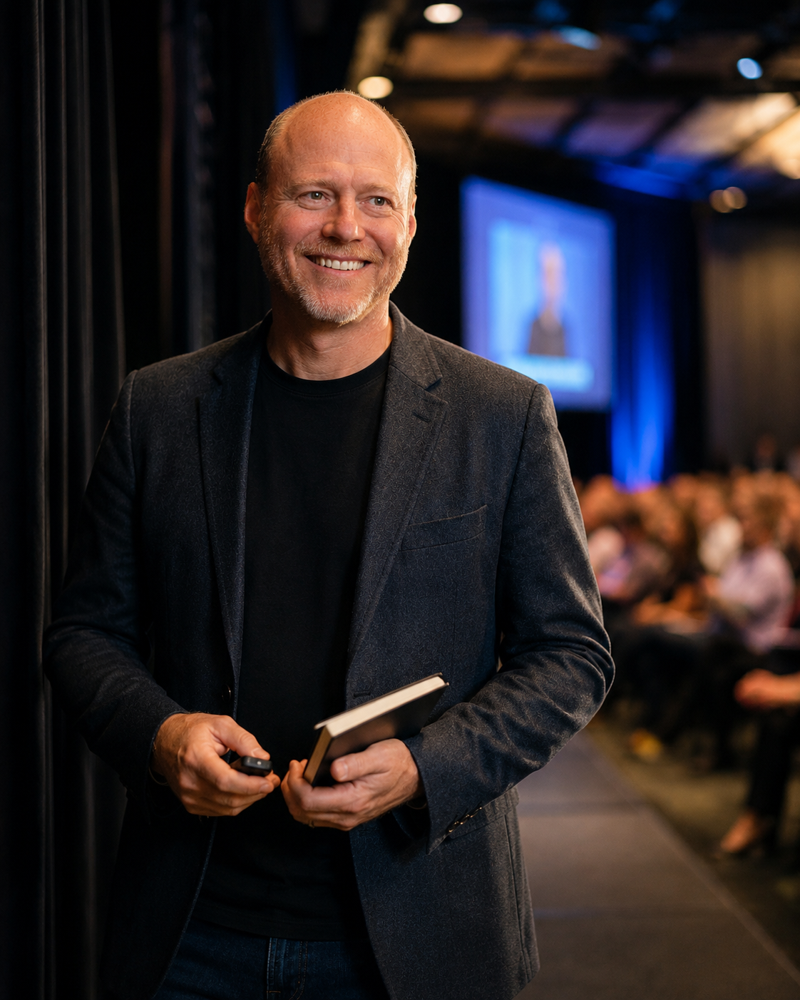
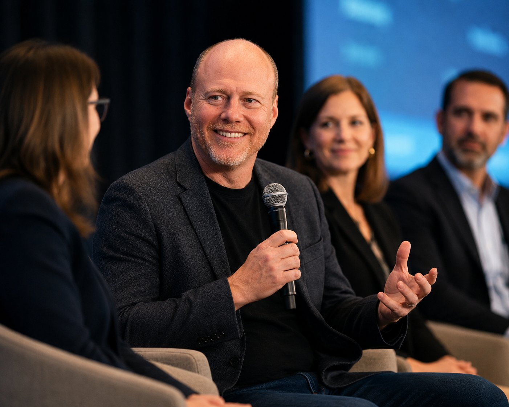
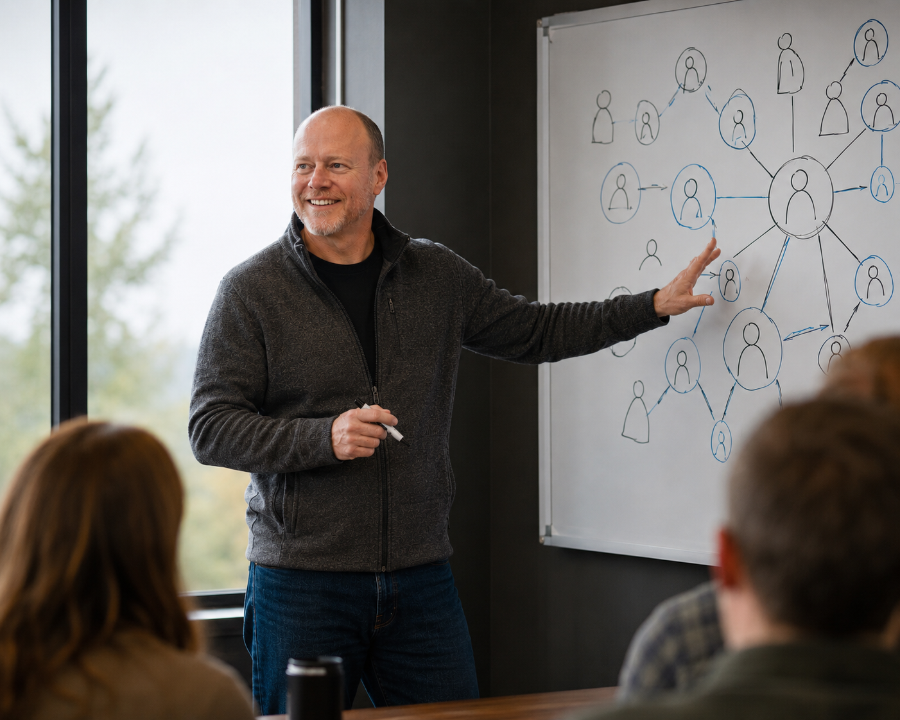
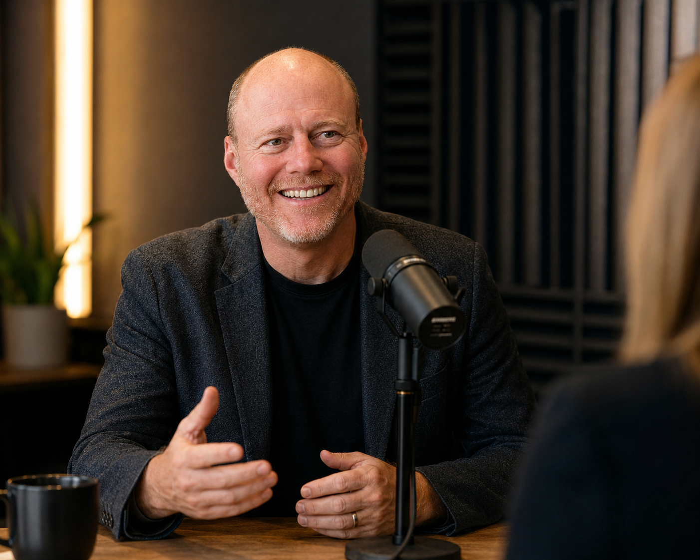
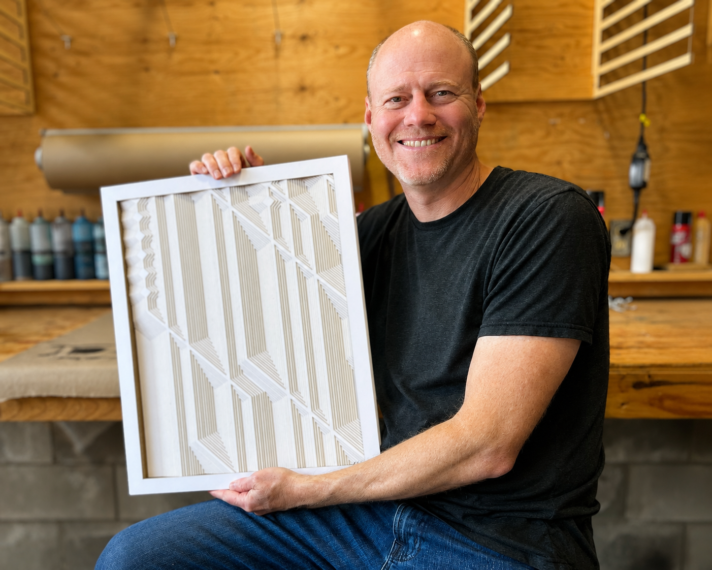
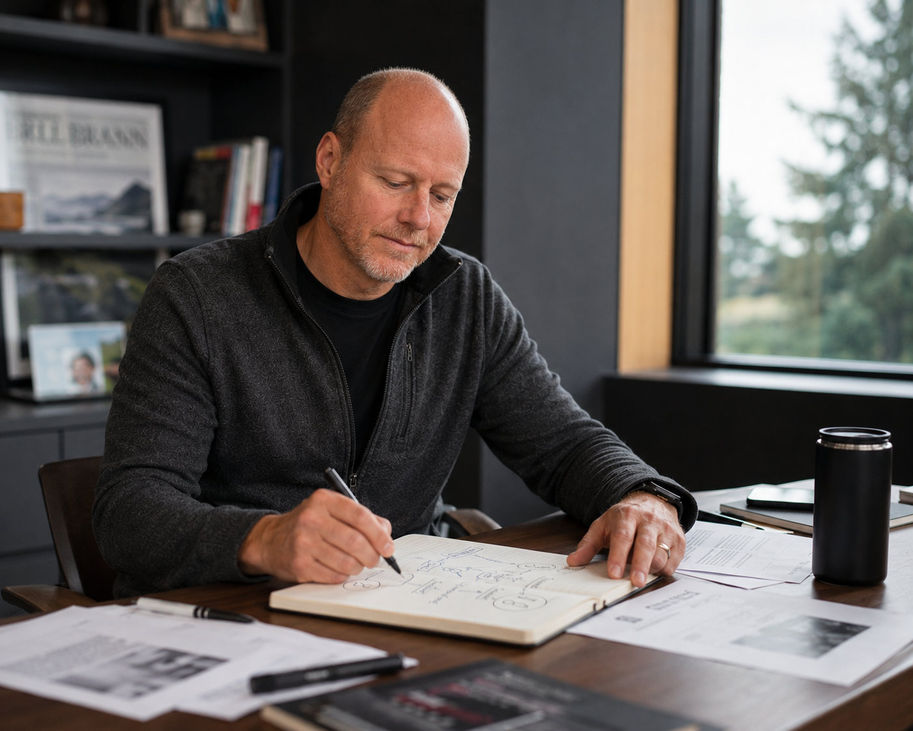

Short Bio
Shawn Kemp is a fourth-generation entrepreneur, industrial designer, and generative artist based in Bellingham, Washington. His career spans 25 years in technology, from Creative Director at Xbox to co-founding ActionSprout, a nonprofit social media platform used by 150,000 organizations in 70+ countries. He is currently Information Systems Renewal Officer at Non-GMO Project, where he leads regenerative systems strategy and the organization’s thoughtful adoption of AI tools.
Outside of work, Shawn creates Singulars: one-of-a-kind generative artworks fabricated as dimensional relief sculptures from layers of laser-cut paper. Each piece begins as a conversation with a collector, translated through algorithmic code and assembled by hand.
Full Bio
Shawn Kemp grew up in Kona, Hawaii, where he helped engineer the first solar vehicle to drive from California to Delaware as part of a state-sponsored high school competition. A chance encounter with industrial designer and IDSA co-founder Budd Steinhilber led him north to Western Washington University, where he earned a degree in Industrial Design in 1998. After graduating, he moved south to the Seattle area, where he’d spend the next eight years living in Seattle, Bellevue, and Redmond while working at Microsoft. He returned to Bellingham in 2006 and has been based there ever since. That commitment to one community has shaped everything that followed.
Shawn arrived at Microsoft in 2000 through a referral at a temp agency, where someone asked if he’d heard of a project called “codename Xbox.” Over the next six years, he served as Creative Director and Group Manager, leading the user experience and design for Xbox.com and Microsoft.com through three full site redesigns, building what was then described as a “robust and active community” around a new gaming console. By 2006, he was exhausted. Eighty-hour weeks, ethical unease about what the platform was optimizing for. He left.
The years that followed were a search for work that mattered. He consulted with ONE/Northwest (now Groundwire), building technology infrastructure for nonprofits. He founded ShareZen, a SaaS platform for shared-asset management that was profitably acquired in 2014. He launched The Big Idea Lab, a coworking space and startup accelerator in Bellingham. And in 2012, he co-founded ActionSprout with Drew Bernard and George DeCarlo to help nonprofits and civic organizations use Facebook effectively.
ActionSprout grew to 150,000 clients across 70+ countries, bootstrapped for years before taking angel funding from Oregon Angel Fund, Bellingham Angel Fund, and Portland Seed Fund. It was the longest and most impactful venture of Shawn’s career. It was also the one that most directly confronted him with the dual nature of the tools he’d helped build. The Cambridge Analytica scandal in 2018 crystallized what he had been sensing: the same platform architecture that helped nonprofits organize donors could be weaponized to divide voters. In May 2021, after nine years, he stepped away. “Physically exhausted, mentally exhausted, and ethically exhausted.”
During the pandemic, Shawn had quietly begun exploring generative art. What started as a creative outlet on the fxhash platform became a full practice: writing algorithms that produce infinite visual variations, then selecting the resonant ones and fabricating them as dimensional layered sculptures using a 100W CO₂ laser cutter and archival bookbinding techniques. In 2023, he formalized this into the Singulars model: one-of-a-kind commissions that begin when a collector shares a story, emotion, or memory, which Shawn translates into algorithmic parameters and physical form.
Today, Shawn serves as Information Systems Renewal Officer at Non-GMO Project, where he’s trying to show that information systems work itself can be regenerative rather than extractive. He leads the organization’s AI adoption strategy. He’s not racing to roll out tools for efficiency gains; he’s helping the team figure out which capabilities actually align with the Project’s values, and how to keep human judgment in the loop as more of the work gets automated.
The pivots aren’t really the story. The story is one question, coming back at different volumes: what does it mean to build technology well? The answer keeps getting smaller and slower. More craft. More community. Less scale.
Pull Quotes
“We are more divided as a country directly because of social media. The ability to weaponize that tool, and the inability for those platforms to counter that weaponization, is really hard.”
“I’ve always had that awareness of, is it moving in a positive direction or is it moving in a detrimental direction? I couldn’t ignore it anymore.”
“I’m not racing to implement AI tools for efficiency gains. I want to help organizations think carefully about which capabilities align with their values, and how to keep human judgment in the loop when automation is everywhere.”
“The algorithm is precise; the assembly is tactile and vulnerable. I honor both. That tension is the work.”
“Create work that brings delight. Build systems that regenerate rather than extract. Ground yourself in community. Listen to your conscience. Repeat.”
“Code becomes form. Abstract math transforms into objects that live in homes, catch light, spark conversation, change with perspective.”
What I Talk About
Topics I’m most curious about and speak to most naturally.
Ethical Technology & Responsible AI
How organizations, especially mission-driven ones, can adopt AI without compromising integrity, losing human judgment, or creating unintended harms. What “thoughtful adoption” actually looks like in practice.
The Social Media Era: Lessons from 150,000 Clients
A decade helping nonprofits leverage Facebook, followed by a reckoning. What we got right, what the platforms got wrong, and what it means for civic life that weaponization and organizing share the same architecture.
Regenerative Information Systems
Technology management that sustains rather than extracts. How mission-driven organizations can build information infrastructure aligned with their values, not just optimized for efficiency or growth.
Building at the Frontier
Three decades of early adoption: Flash, Xbox, social platforms, generative algorithms, AI tools. What it’s like to work at the edge of what’s possible, and why the ethical questions always arrive late.
Generative Art & the Physical/Digital Divide
Writing code that generates visual form, then fabricating those forms into objects you can hold. What it means to translate the infinite outputs of an algorithm into singular, irreplaceable physical things.
Entrepreneurship as a Conscience Practice
What happens when building something successful conflicts with your values? Lessons from 25 years of starting, scaling, and sometimes walking away. Why integrity over scale is a viable long-term strategy.
Industrial Design Thinking in Software
Applying materiality, systems thinking, and human-centered process to products that don’t have physical form. How training as an industrial designer shaped everything from Xbox UX to laser-cut sculptures.
Community-Rooted Innovation
Building ventures that are embedded in place. Bellingham as anchor, not just backdrop. Why geographic commitment to community is a competitive advantage, not a limitation.
Photos
High-resolution photos available for editorial and promotional use. Right-click any image to download.
Headshots & Portraits
Speaking & Presenting




Studio & Practice


Environmental & Lifestyle
Career Highlights
- Creative Director, Xbox at Microsoft (2000–2006). Led UX and design for Xbox.com through three full site redesigns. Built the original Xbox community and contributed to brand guidelines at product launch. Managed a 20-person team and $500K design budget.
- Co-founder, ActionSprout (2012–2021). Built a nonprofit social media platform to 150,000 clients in 70+ countries. Bootstrapped for two years before raising from Oregon Angel Fund, Bellingham Angel Fund, and Portland Seed Fund.
- Information Systems Renewal Officer, Non-GMO Project (2022–present). Leading regenerative information systems strategy and responsible AI adoption for North America’s most trusted GMO-avoidance label.
- Founder, Upspire Studios. Consulting practice and creative holding company for web application development, strategic technology planning, and generative art production.
- Generative Artist, Singulars series (2023–present). One-of-one commissions translating collector stories into dimensional laser-cut relief sculptures via custom generative algorithms.
- Founder, The Big Idea Lab (2010–2014). Coworking space and startup accelerator in Bellingham, Washington.
- Founder, ShareZen (2010–2014). Profitable SaaS platform for shared-asset management; acquired 2014.
Suggested Interview Questions
A starting point for hosts and journalists. Shawn speaks most naturally when the conversation goes somewhere unexpected.
- You’ve built technology that reached millions of people, and then walked away from it. What does that cycle feel like from the inside?
- You left ActionSprout describing yourself as “ethically exhausted.” What does that mean, and how do you know when you’ve hit that point?
- You now lead AI adoption at a mission-driven nonprofit. What does “thoughtful adoption” actually look like, and what are the red flags you watch for?
- You went from building platforms for 150,000 clients to making artworks one at a time. What are you optimizing for now that you weren’t before?
- Your art involves algorithms that generate billions of possible outputs. How do you decide when a piece is “right”?
- You grew up surfing in Hawaii. What did that teach you about creativity and innovation, and how does it still show up in your work?
- Bellingham has been home since 1994, apart from your Microsoft years in the Seattle area. What does that kind of geographic commitment do for how you think about building things?
- You describe your career as a repeating pattern: pioneer, builder, conscience clash, pivot. Are you still in that loop, or has something changed?
- What do most technology leaders get wrong about the organizations they’re building?
Connect
Booking & Press
For podcast invitations, speaking engagements, interviews, and press inquiries.
upspire.studio@gmail.comOnline
Based in
Bellingham, Washington
Available for remote and Pacific Northwest engagements.